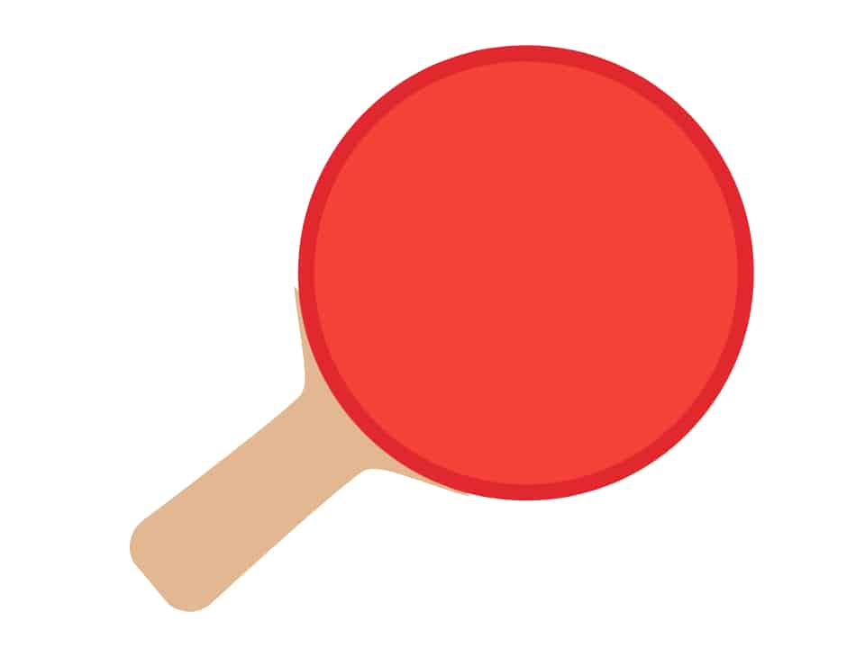
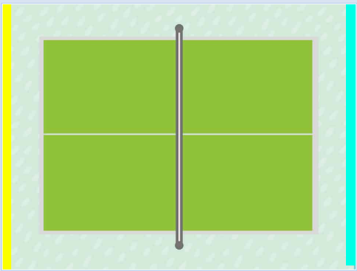
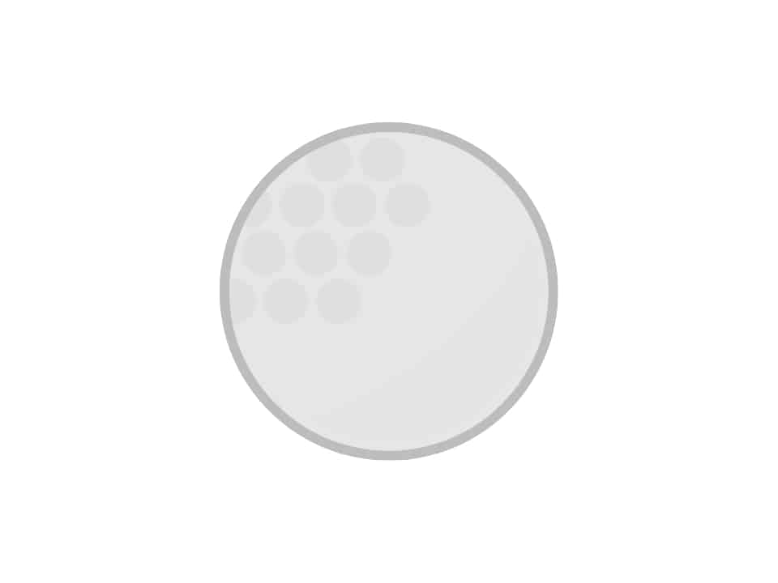

Wunschzettel
1. Spieler erstellen
-
Anstelle der Katze, wollen wir Schläger haben die sich bewegen. Mache dafür die Katze unsichtbar. Mal sehen ob du den Button dafür findest.
-
Erstelle jetzt deinen eigenen Schläger als neue Figur. Achte darauf, dass der Rand ein anderes rot hat als die Fläche. Außerdem muss der Rand schön breit sein! Du benötigst nur einen einzigen Kreis und ein Rechteck um deinen Schläger zu erstellen.

2. Spielfeld erstellen
Ein cooles Spielfeld ist wichtig für jedes Spiel. Weil das erstellen aber sehr lange dauern kann, wollen wir hier ein vorgefertigtes Spielfeld laden.
Lade das Spielfeld, dass unter dem folgenden Link zu finden ist.
{kind=link}

Ein Spielfeld kannst du im Bühnenbereich laden.
Wenn du Probleme hast die Vorlage zu speichern, gucke unter Tipps nach.
3. Eigenen Schläger steuern
Dein eigener Schläger (den gegnerischen hast du noch nicht erstellt) soll immer da sein, wo du gerade hinklickst.
Dafür musst du dauerhaft der Figur Schläger sagen, dass sie zu dem Mauszeiger gehen soll.
Der Schläger soll diese Tätigkeit aber erst ausführen nachdem die grüne Fahne angeklickt wurde.
⚠️ Probiere etwas rum, bevor du evtl. in die Tipps guckst.
4. Spielball erstellen
- Erstelle einen Ball der wie folgt aussieht.

-
Der Ball sollte grau gefärbt sein mit grauem Rand.
-
Gehe dazu unten im Figurenfenster auf malen und male deinen eigenen Ball mit einem Kreis.
Der Ball soll sich natürlich bewegen.
- Der Ball soll sich dauerhaft mit einem Tempo von 15 Schritten bewegen und automatisch vom Rand abprallen. Natürlich soll er dies aber nur nach dem Klicken der grünen Flagge machen.
5. Ball abprallen lassen
- Der Ball soll sobald er deinen Schläger berührt die Richtung um 180 Grad ändern. Um zu prüfen, ob der Ball den Schläger berührt kannst du die Farbe des Schlägers ausnutzen. Nutze hierfür die Farbe des Randes deines Schlägers.
⚠️ Du kannst die Farbe deines Schlägers mit einer Pipette exakt auswählen!
- Da nur 180 Grad schnell langweilig werden soll der Ball seine Richtung noch zusätzlich um eine zufällige Richtung zusätzlich ändern. (wähle diese zufällige Richtung die addiert wird aber so, dass der Ball noch prinzipiell in Richtung Gegner fliegt.
⚠️ Wenn es Probleme gibt, dass der Ball nach der Berührung mit dem Schläger ganz oft so hängen bleibt, dann mache den Rand des Schlägers und des Balls dicker und in einer anderen Farbe als die Innenfläche!
6. Gegner-Schläger erstellen
Erstelle einen weiteren grünen Schläger für den Gegner.
7. Gegner automatisch spielen lassen
Der gegnerische Schläger soll immer auf einer Linie nach oben oder unten Richtung Spielball laufen, um ihn zurückzuschlagen.
-
Merke dir dafür zuerst die y-Position des Balls in einer Variable/Speicherstelle (Code beim Ball hinzufügen)
-
Nutze diese Information anschließend um den gegnerischen Schläger dauerhaft zu dieser Position gleiten zu lassen. (*gleite in __ Sek: zu x:__ y:__ *)
⚠️ Mache den gegnerischen Schläger nicht zu schnell sonst gewinnt er immer (und nicht zu langsam sonst ist es langweilig)
- Der Ball soll auch beim Berühren des gegnerischen Schlägers abprallen. Kannst du hier alten Code kopieren?
Kannst du die Anzeige der Ballposition oben links im Spielfenster abstellen?
8. Punkte vergeben
- Je nachdem welche Wand der Ball berührt (links oder rechts) soll der jeweilige Spieler einen Punkt erhalten. Nutze hierfür 2 Variablen und die unterschiedlichen Farben der Wände aus.
⚠️ Nenne die Variable Punkte Spieler 1 und Punkte PC
-
Setze die Punkte zurück, wenn das Spiel neu startet (wenn die grüne Fahne angeklickt wird)
-
Setze den Ball nach einem Punkt in die Mitte des Spielfeldes zurück. (Setze also seine x und y Koordinate entsprechend)
9. Siegesmeldung
-
Wenn ein Spieler 11 Punkte erzielt hat, soll eine Meldung erscheinen, dass Spieler 1 gewonnen hat oder Game over ist.
-
Erstelle dafür zwei Figuren mit den folgenden Vorlagen:
{kind=link}
{kind=link}
Nutze dafür folgende Blöcke:
-
verstecke dich und warte danach 1 Sekunde (ansonsten gibt es manchmal Fehler)
-
zeige dich
-
stoppe alles
und noch Blöcke die du eh schon kennst.
Denke daran die Punkte dauerhaft zu testen!
11. Töne einfügen
Wenn du so weit gekommen bist, versuche Töne einzufügen.
-
ein Ton wenn Spieler 1 gewonnen hat
-
ein anderer Ton wenn Spieler 1 verloren hat
⚠️ Zock erstmal ein paar Runden!
Wenn du genug gezockt hast kannst du dich an einer der folgenden Aufgaben versuchen!
Sätze einfügen
Satz
- Ein Satz wird von dem Spieler gewonnen, der zuerst 11 Punkte erzielt hat.
- Haben beide Spieler 10 Punkte erreicht, geht es in die Satzverlängerung.
- Es gewinnt derjenige den Satz, der zuerst mit 2 Punkten Vorsprung führt (Beispiel: 12:10, 13:11 etc.).
Programmiere, eine Satzanzeige. Das heißt frage richtig ab, ob bis 11 oder weitergespielt wird. Ermittele den Gewinner und zeigen dann z.B. 1:0 Sätze oben an.
Zeige die Punkte weiterhin an.
Spiel
- Im Mannschaftsspielbetrieb wird ein Spiel solange gespielt, bis ein Spieler zuerst drei Sätze gewonnen hat.
- Im Höchstfall können also fünf Sätze gespielt werden. Bei einem 2:2 Satzgleichstand bringt der fünfte Satz die Entscheidung.
Programmiere die Meldung, die zeigt wer das Spiel gewonnen hat so, dass sie erst erscheint, wenn jemand wirklich ein Spiel (also drei Sätze) gewonnen hat.
Stoppuhr für Ballwechsel
- Erstelle eine Stoppuhr die nach jedem Punkt anzeigt, wie lange gespielt wurde, bis ein Punkt erzielt wurde.
- Zähle auch die Anzahl der Schläge bis zum Punkt.
z.B. 20sec, 5 Schläge
⚠️ Es gibt schon eine vorgefertigte Variable Stoppuhr! Nutze den setze Stoppuhr zurück und den sage Hallo für 2 Sekunden Befehl!
Steuerung des Schlägers ändern
-
Anstatt den eigenen Schläger mit der Maus zu navigieren, wollen wir das mit Pfeiltasten machen.
-
Kopiere dafür deinen Ball, mache ihn dann unsichtbar und ändere die Steuerung des neuen Balls auf Pfeiltasten. So hast du falls etwas schief läuft noch deinen alten gut funktionierenden Schläger.
-
Gucke gerne unter Tipps nach wie du mit Pfeiltasten steuern kannst.
Mehrere Bälle
- Erstelle einen zweiten Ball. (Du musst ihn nicht neu programmieren du kannst den alten kopieren)
Eigene Tischtennisplatte erstellen
Erstelle gerne eine eigene Tischtennisplatte, mit z.B.
-
Löchern
-
Stellen die den Ball verlangsamen
-
Stellen die den Ball verschnellern
-
Stellen die den Ball umlenken
⚠️ Du kannst dafür direkt in die alte Tischtennisplatte reinmalen!